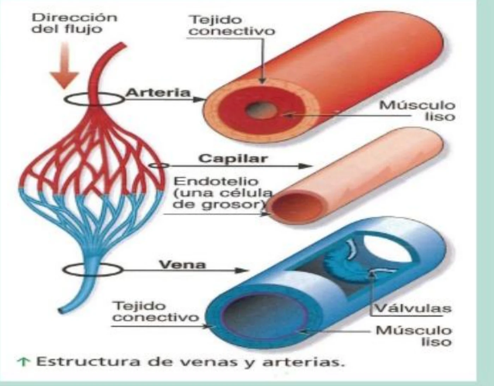
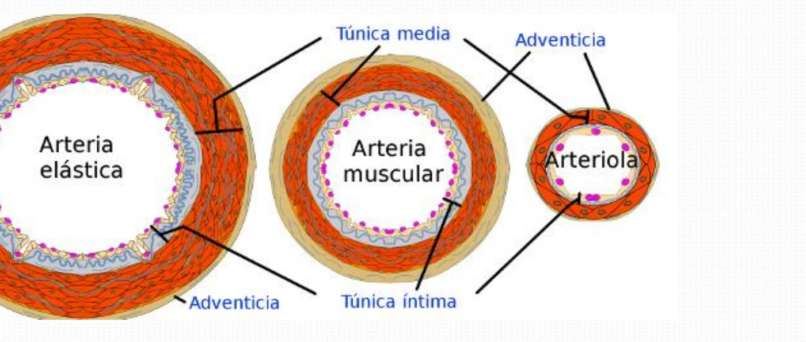
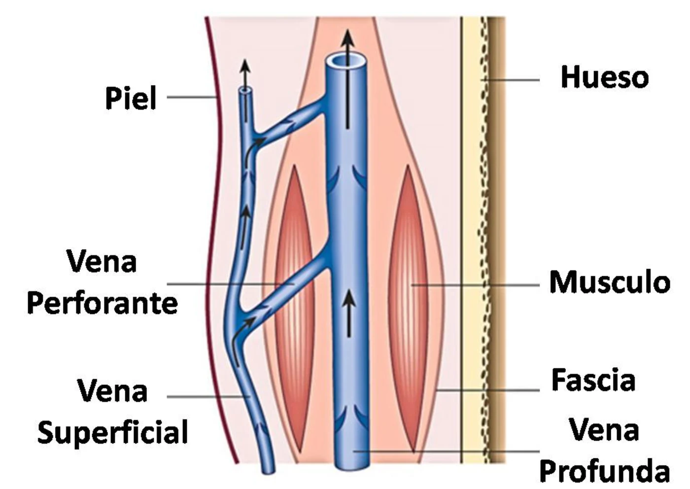
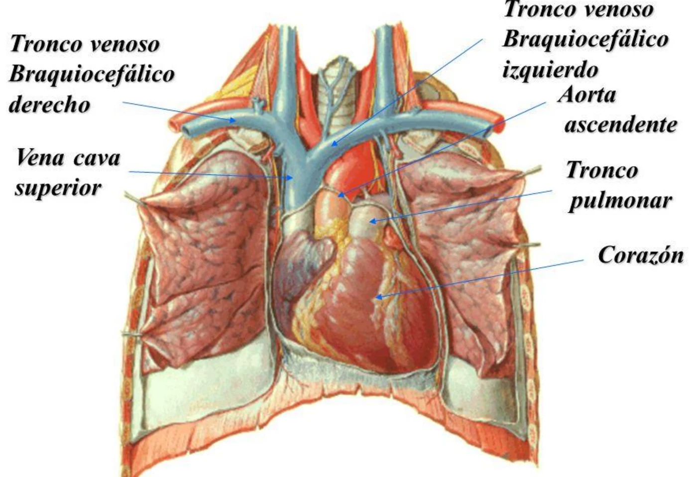
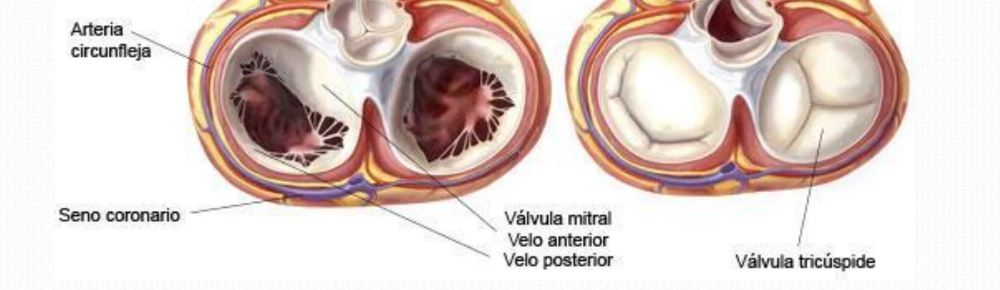
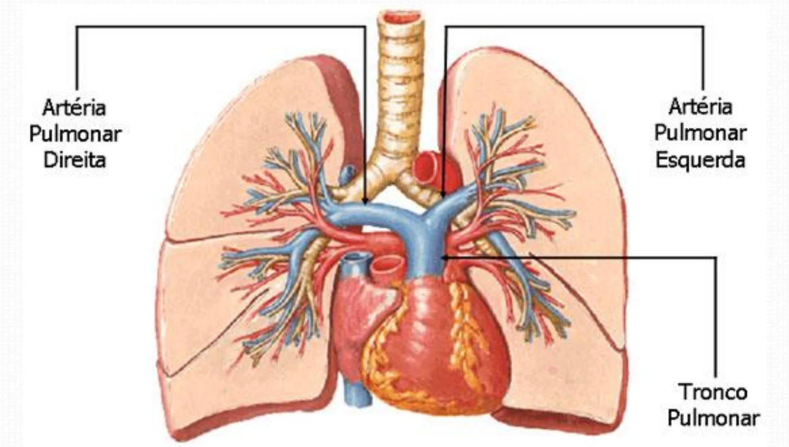

ClinicusMed · Dossiê Clinicus — Padrão de Excelência
Artérias e veias são condutos que garantem o transporte do sangue pelo corpo. São tubos flexíveis e elásticos, de luz aberta no corte, e o diâmetro diminui de forma regular a partir do coração, à medida que os ramos colaterais saem do eixo original (a aorta, "eixo principal da circulação").

| Vaso | Parede / Característica | Função |
|---|---|---|
| Artéria | Músculo liso espesso e tecido conjuntivo | Transporta o sangue ejetado pelo coração, sob alta pressão |
| Capilar | Só endotélio (uma célula de espessura) | Troca rápida de materiais entre sangue e líquido intersticial |
| Veia | Camada muscular mais fina, calibre maior e válvulas unidirecionais | Distende-se e acomoda mais sangue; as válvulas impedem o refluxo |
A direção do fluxo é sempre artéria → capilar → veia. Por isso a artéria precisa de parede espessa (pressão alta), o capilar de parede finíssima (troca) e a veia de válvulas (fluxo de volta ao coração contra a gravidade).
| Tema | Conceito |
|---|---|
| Artérias do aparelho locomotor | Destinadas aos músculos |
| Artérias viscerais | Destinadas aos órgãos; o calibre depende da importância funcional do órgão e não do seu volume |
| Trajeto | Retilíneas (pescoço e membros) ou curvas/sinuosas |
| Eixo vasculonervoso | Quase sempre a artéria é acompanhada por veias e nervos satélites |
| Bainha perivascular | A artéria percorre tecido conjuntivo que se organiza em bainha |
| Relações ósseas e musculares | Algumas correm sobre ou dentro dos ossos; "músculo satélite" é o que a artéria segue ou cobre |
| Tipo | Definição |
|---|---|
| Ramos colaterais | A artéria de origem continua o seu trajeto depois de dar o ramo |
| Ramos terminais | A artéria de origem não continua: ela se divide e termina |
| Espolão | Crista que se forma na origem do ramo colateral (e na bifurcação terminal) |
| Anastomose | Subtipos / Conceito |
|---|---|
| Arterioarteriais | Inosculação, convergência, conduto de união e rede |
| Arteriovenosas | Arteríola + vênula: desvio direto, sem passar pelo capilar |

| Tipo | Característica |
|---|---|
| Artérias elásticas (grandes) | Predomina a camada elástica (aorta e grandes troncos) |
| Artérias musculares | Predomina a camada muscular |
| Arteríolas | Pouca lâmina elástica; a musculatura forma o esfíncter pré-capilar |
As veias distinguem-se das artérias por terem paredes mais finas, menos elásticas, mais ou menos contráteis, e por existirem em maior quantidade. Algumas veias têm válvulas.

| Tipo | Característica |
|---|---|
| Veias superficiais | No plano subcutâneo |
| Veias profundas | Satélites das artérias; recebem as superficiais por meio das veias comunicantes (perfurantes) |
| Seios venosos da dura-máter | Fendas vasculares no interior da dura-máter do encéfalo, sempre abertas e fixas ao esqueleto |
| Vasos | Inervação |
|---|---|
| Artérias viscerais e grandes troncos | Sistema nervoso autônomo: tronco simpático |
| Artérias periféricas | Nervos cranianos ou espinais |
| Veias | Possuem menor quantidade de inervação |
É a artéria funcional da pequena circulação: conduz o sangue não oxigenado do coração direito até os pulmões.

| Aspecto | Descrição |
|---|---|
| Origem | No ventrículo direito, à frente e à esquerda da aorta |
| Válvula pulmonar | 3 válvulas semilunares (Anterior, Direita, Esquerda — A, D, E) com seus nódulos de Morgagni |
| Trajeto | Para cima, para a esquerda e para trás, em curva ao redor da aorta |
| Terminação | Abaixo do arco aórtico, nos dois ramos terminais (direita e esquerda), marcadas pelo espolão pulmonar |
| Paredes | Vaso de grosso calibre (cerca de 30 mm), de paredes finas |

O tronco pulmonar nasce à frente e à esquerda da aorta e a contorna por trás, subindo e indo para a esquerda. Ele termina abaixo do arco aórtico, onde se divide em duas artérias pulmonares.

| Região | Relação do tronco pulmonar (coberto pela folha visceral do pericárdio seroso) |
|---|---|
| Anterossuperior | Espaço intercostal |
| Direita | Aorta e tendão do infundíbulo |
| Esquerda | Aurícula (orelhuela) esquerda |
| Posteroinferior | Seio transverso do pericárdio |
| Artéria | Características |
|---|---|
| Pulmonar direita | Mais longa. Anterior: arco aórtico e VCS (forma o seio transverso). Posterior: pericárdio fibroso. Separada da esquerda pelo espolão pulmonar |
| Pulmonar esquerda | Anterior: pericárdio seroso e veia pulmonar superior esquerda. Posterior: aderida ao pericárdio fibroso |
Um caso que mostra como a anatomia do tronco pulmonar e das veias de membros inferiores explica uma das emergências mais cobradas em clínica.
A Clinicus selecionou este conteúdo para complementar seu estudo. Não substitui a leitura do resumo — o resumo ensina, o vídeo reforça.
Carregando recomendações...
O sistema guarda, no seu navegador, quais cards você já sabe bem e quais precisam voltar mais cedo — cada vez que você avalia um card, ele recalcula quando ele deve voltar.
12 questões, do mais básico ao mais puxado. Escolhe uma alternativa, depois clica em "Ver comentário completo" — vale a pena ler até quando você acerta, porque o comentário explica cada alternativa, não só a certa.